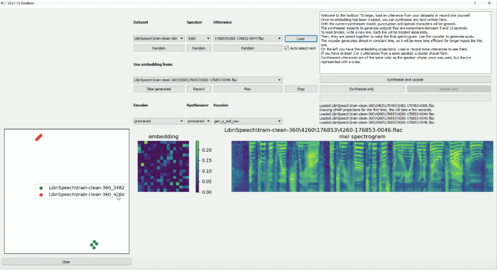

Resemble.AI
As we needed a digital clone of voice we started looking into tools that are capable of doing that and this was one the easy solution, well as it sounded at first. I decided to try it out and make a clone of my own voice which is possible at theur website. For this I had to say 50 sentences in english, provided by them on their website then the program records them and after processing it gives you a clone of your voice. The results I got were horrible and it did not sound like a voice it was all distortion. Here is an example voice from there main website and on the right is the cloned voice.

Tacotron
The second tool I tried was Tacotron, It looked really promising in the start, as it allows you to clone the audio sample only with 5 seconds of audio input. It is an open source tool and requires a lot of dependencies in order to run, It was very difficult to set it up, it took the whole group 3 days to get it up and running and finally we were able to clone our own voice. The results were decent compared to other tools, but they were not great. After some time we showed it to the client and they were not impressed. As the audio input can not be increased to there was no chance of improvement and they audio quality remained inappropriate. Here is an example output of my cloned voice.
Possibilty of Dutch Voice Clone
After testing the available tools, we have come to the conclusion that we want to work with Tacotron 2, as it best meets our requirements. To ensure that Tacotron also receives a Dutch output, a dataset must first be created. This can be done by collecting hours of Dutch voice sounds and then training a dataset with this data via an external program. It is important that you have a clear voice without background noises, with a text file that states what is said in the audio files. For this I like to use audiobooks, newsreels and press conferences as this is commonrecorded without background sound, and the narrated text can often be found online. An additional advantage of audiobooks is that you get a few hours of recordings with one audio file. Because the more training data you provide, the more realistic the output will ultimately sound. During my research period I found out that Handpicked Agencies in Breda (where I realized my S4 professional task project for) has already been able to create a working dataset for Tacotron by means of audiobooks. Unfortunately, this does not sound realistic enough for our purposes.

Keithito
The first tool I tried to train a dataset was the Keithito Tacotron Implementation . The tool looked very promising, but unfortunately left something to be desired as all code was unfortunately outdated. According to Github, the code was last updated more than two years ago, and the required software requirements (Specific versions of NumPy, Tensorflow, Python) are no longer supported, and can therefore no longer work together.In the end I was able to get everything working up to converting text to an audio file with a pre-trained model, the result you can listen to on the right. But when training my own model, there were so many errors due to outdated software that no longer works together that I started looking for alternatives.
TensorFlow TTS
An alternative to Keithito's version was TensorFlowTTS , developed by TensorFlow (An open source machine learning platform). At the time of installation, the code was last updated 4 days ago, and the requirements contained all the latest versions of the required software. This made the installation process run smoothly.Although the documentation was not clear everywhere, I arrived without too many problems when pre-training a dataset. For this I first used an existing dataset (which had not yet been trained) so that I did not invest a lot of time in creating a dataset if I ultimately cannot train it. When actually training the model I kept getting the error that my RAM was full, I tried to solve this by splitting the training into smaller sections, but unfortunately this did not help. Then I asked my teammate Aman if he would like to install the software on his PC as he has more RAM.
NVIDIA NeMo
Since NVIDIA is involved in many AI projects, we scheduled a meeting with someone from NVIDIA, in the hope that he / she could tell us more about the available tools they have developed, and what they think is the best approach for our project. . We had this conversation with Adam Henryk Grzywaczewski (Deep Learning Solution Architect at NVIDIA). He was very enthusiastic about our concept for PSV, and recommended that we use NVIDIA NeMo : a toolkit for Conversational AI.After several weeks of experimenting with NVIDIA NeMo, we decided not to continue with this as the result is not realistic enough to appear credible. It sounds great, but not good enough. It was also too risky because if after 2 weeks it turns out that the training did not go well, you can start again with training. Also, we only heard English speech from NeMo. How good it would sound in Dutch is still the question. Based on this, we have decided to look for a more reliable alternative.